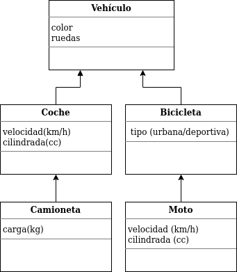

Como hemos mencionado antes, la POO introduce muchos conceptos nuevos. Los más básicos los vimos en la clase anterior. Ahora nos introduciremos a otros conceptos básicos de la POO
En POO, se define herencia a la capacidad de crear clases que hereden el comportamiento (métodos) y atributos (variables) de otra clase. De esta manera, se introducen nuevos conceptos, clases padres o superclases y clases hijas o subclases.
Podemos decir entonces que la clase hija hereda los métodos y atributos de la clase padre. Aunque también puede tener atributos y métodos propios o los métodos de la clase padre reescritos como veremos mas adelante.
Imaginemos que podríamos tener una clase Animal para representar animales. Y dotar a la clase con atributos como nombre, especie, etc. y como métodos podemos tener comer, dormir, caminar, correr, etc.
A su vez podemos ser más específicos y definir la clase Gato para representar gatos en nuestro programa. La clase Gato puede ser una subclase de la clase Animal. Como un gato es a su vez un animal, es fácil imaginarnos que heredará los atributos y métodos de la superclase.
Hasta este punto podemos preguntarnos para qué sirve realmente la herencia o nos puede parecer de poca utilidad. Sin embargo, aporta mucha claridad y evita código repetido.
Puede ser útil cuando tengamos clases que se parecen entre sí pero tienen ciertas particularidades.
En vez de definir una clase por cada "animal", podemos tomar los elementos en común y crear una clase Animal de la que hereden el resto de los animales.
Esto, ayuda a aplicar el concepto de DRY (Don't Repeat Yourself) que consiste en no repetir código de manera innecesaria. Cuanto más código repetido haya, será mas difícil de mantener y habrá mas posibilidad de inconsistencia.
Veamos un ejemplo para profundizar el concepto
Los diferentes lenguajes tienen sus formas de indicar que una clase es hija de otra clase previamente definida. Se usan palabras claves como extends, subclass, inherits u otras similares.
En el caso de Python, lenguaje de referencia en este curso, simplemente se envía como parámetro la clase padre.
# Superclase
class Animal:
pass
# Subclase 1
class Gato(Animal):
pass
# Subclase 2
class Perro(Animal):
pass
El concepto de herencia múltiple, es que una clase puede heredar (o ser hija) de más de una clase. No todos los lenguajes soportan esta característica. Python, por su parte sí soporta herencia múltiple. La sintaxis es la siguiente:
class Gato(Animal, Mamifero):
pass
Otros lenguajes, como Java, al no soportar herencia múltiple suelen utilizar mecanismos como el concepto de interface para simular las características de la herencia múltiple.
super()Algunas veces nos es útil acceder a un método de la superclase desde una subclase. Para eso existe un método especial llamado super().
Es algo muy habitual en la POO y los lenguajes con dichas características soportan un mecanismo para interactuar con la clase padre. Se suele usar el nombre super().metodo_padre() para referirnos al método de la superclase.
class Animal():
def __init__(self, una_especie):
self.especie = una_especie
class Gato(Animal):
def __init__(self):
super().__init__('gato')
¿Qué pasa en este ejemplo? Ver código funcionando. ¿Vemos otro ejemplo?
Las subclases pueden tener métodos o atributos que la superclase no tiene. Por ejemplo, la subclase Gato puede tener un método maullar() que la clase Animal no tiene.
class Animal():
pass
class Gato(Animal):
def maullar(self):
print("¡Miau!")
Importante: La visibilidad de los métodos y atributos, es siempre desde arriba hacia abajo. Es decir, las subclases tienen acceso a los métodos y variables de las superclases, pero no es igual a la inversa.
Veamos un ejemplo mas completo.
Una de las cualidades mas interesantes de la POO, además que las clases hijas pueden heredar los atributos y comportamiento de las clases padres, es que las clases hijas pueden realizar ciertas acciones a su manera. Es decir, no tiene por qué realizar una acción igual que la clase padre.
Volviendo a la clase Animal, en el siguiente ejemplo intentamos describir este concepto.
class Animal():
def hablar(self):
pass
class Perro(Animal):
def hablar(self):
print("¡Guau!")
Algo muy interesante que podemos hacer es sobreescribir el método __str__() en una clase. Lo veremos dos ejemplos; uno sin reescribir el método y otro ejemplo reescribiendo el método. Ref.
Esto nos da el pie para continuar con el próximo principio de la POO, polimorfismo.
El término polimorfismo tiene origen en las palabras poly (muchos) y morfo (formas) y aplicado a la programación hace referencia a que los objetos pueden tomar diferentes formas.
Dicho en otras palabras, quiere decir que los objetos de diferentes clases pueden ser accedidos utilizando la misma interfaz (métodos disponibles) mostrando un comportamiento distinto (tomando diferentes formas) según como sean accedidos pero la forma de accederlo es la misma.
En Python (y en otros lenguajes de tipado dinámico como Ruby), el término polimorfismo viene muy ligado con el duck typing. Que básicamente lo que propone es que si un objeto camina como un pato y habla como un pato, entonces tiene que ser un pato.
Volviendo a lo práctico, el polimorfismo nos dice que podemos tratar de la misma manera a varios objetos independientemente del tipo o instancia de la clase que sea.
class Perro(Animal):
def hablar(self):
print("Guau!")
class Gato(Animal):
def hablar(self):
print("Miau!")
for animal in Perro(), Gato():
animal.hablar()
# Guau!
# Miau!
Cada animal se comporta de manera distinta al usar hablar() pero el método para hacerlos hablar es el mismo.
La variable animal va "tomando formas" de Perro y Gato en tiempo de ejecución. Si bien, en Python no es un problema ya que es de tipado dinámico, en otros lenguajes como Java el polimorfismo es mas evidente y debe ser apoyado por la herencia para interactuar entre objetos de distintas clases.
El encapsulamiento o encapsulación en programación es un concepto relacionado con la POO, y hace referencia al ocultamiento de los estado internos (variables y métodos) de una clase hacia al exterior de la misma.
En ciertos lenguajes es posible ocultar información que puede ser vista por otras clases, incluso con sus clases hijas. En C++ y Java se especifica usando las palabras claves:
Como hemos visto anteriormente, es una mala práctica de programación acceder y modificar directamente los estados internos de una clase fuera de la misma.
Por lo tanto veremos como proteger los estados internos de una clase para que no sea posible modificarlos y proteger la integridad de nuestros objetos.
En Python no tenemos las palabras claves que sí tenemos en Java y C++. Pero tenemos otras formas de hacer lo mismo.
class Prueba:
def public(self):
pass
def _protected(self):
pass
def __private(self):
pass
Ejemplo encapsulamiento
Representar en Python el siguiente esquema de clases Vehiculo.
Implementar el método __str__() por cada clase para que imprima el contenido de cada caracteristica del vehículo en particular.
Ejercicio resuelto
ThinkPython 2nd edition
(Downey-Elkner-Meyers)